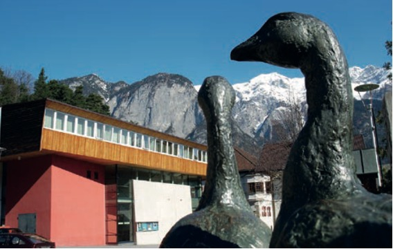

Mit Herz und Hirn für Völs
Bürgermeister Peter Lobenwein
(Beitrag aus der Gemeindezeitung Nr. 3 - März 2023)

Liebe Völserinnen, liebe Völser!
ERWEITERUNG DER KINDERBETREUUNGSZEIT
Das Beste für die Zukunft unserer Jugend zu wollen, das eint alle im Gemeinderat. Und im Sinne der Vereinbarkeit von Beruf und Familie wurde in der letzten Gemeinderatssitzung
eine Erweiterung der Kinderbetreuungszeit beschlossen: Ab Herbst 2023 wird der Kindergarten bedarfsorientiert von 7.00 bis 17. 00 Uhr offen sein, ebenso die Kinderkrippe.
Kinder fühlen sich im Allgemeinen unter Gleichaltrigen wohl, zumal es auch Rückzugsmöglichkeiten gibt. Was für das einzelne Kind letztlich passend ist, ist eine pädagogische
Entscheidung. In der Kinderkrippe wird es auch notwendig sein, ab Herbst eine weitere Betreuungsgruppe einzurichten. Die Ferienbetreuung (Sommer-, Herbst-, Semester und Osterferien)
für Schülerinnen und Schüler wird auf die Altersgruppe der 11- und 12- jährigen Völser Kinder ausgeweitet. Dies war ein Wunsch vor allem berufstätiger Eltern.
BILDUNGSSTANDORT DORF
Im Zusammenhang mit der zukünftigen Kinderbetreuung ist auch die Entwicklung des neuen Bildungsstandortes Dorf ganz wesentlich. Viele haben an den Planungen und Überlegungen für eine
Zusammenführung mit der Mittelschule im Westen mitgewirkt. Letztlich ist die Entscheidung gefallen, dass die Volksschule doch im Dorf verbleiben soll. Diese neuen Planungen
(Quartiersentwicklung) sind bereits auf Schiene und werden mit September heurigen Jahres abgeschlossen. Diese Entwicklung umfasst die Volksschule, den Kindergarten, die Kinderkrippe,
eine schulische Ganztagesbetreuung oder Hortlösung, genormte Doppelturnhalle, Flächensynergien für alle Bereiche, sowie einer Aula, die auch für externe Veranstaltungen nutzbar ist.
Stellplätze für Fahrräder, einer Bring- und Holzone, sowie die Zufahrtsmöglichkeit für Einsatzfahrzeuge müssen ebenso gegeben sein. Ein neuer Dorfplatz, der auch für externe
Veranstaltungen wie z.B. Märkte oder einen Gastrobetrieb nutzbar ist, wird ebenso mitgedacht. Das Ergebnis dieser Entwicklung wird präsentiert und soll dann zügig umgesetzt werden.
STROMPREISE
Viel Verhandlungsbedarf besteht auch bei der Entwicklung der Strompreise. Wie schon in den Medien berichtet, ist die Gemeinde sehr bemüht, eine Lösung für private Haushalte
allgemein und jene Haushalte zu finden, bei denen das Heizen mit festen und flüssigen Brennstoffen verboten ist. Dieses Verbot war aufgrund der kleinklimatischen Gegebenheiten
notwendig, um das Völser Seegebiet überhaupt besiedeln zu können. Der verwendete Strom stammt zu fast 100 Prozent aus Wasserkraft, Windenergie und Photovoltaik.
Alle im Gemeinderat vertreten Fraktionen sind sich einig, dass da eine faire Lösung gefunden werden muss. Die Gespräche mit den Verantwortlichen des Landesenergieversorgers und
des Landes werden von mir gemeinsam mit unserer Vizebürgermeisterin Pöhli und unserem Vizebürgermeister Ties unter Beiziehung von Fachleuten geführt. Auch die zuständigen Bundesministerien
wurden von uns bereits befasst und wir hoffen auf eine gute Lösung.
SEITE DER FRAKTIONEN
In dieser Ausgabe der Gemeindezeitung findet ihr erstmalig seit Bestehen der Völser Gemeindezeitung eine „Seite der Fraktionen“. Ein Ansinnen, dass schon seit vielen Jahren besteht
und auch in einigen Wahlprogrammen nachzulesen war, kommt zur Umsetzung. In jeder zweiten Ausgabe der Gemeindezeitung haben alle im Gemeinderat vertretenen Fraktionen die Möglichkeit,
zu einem bestimmten Thema Stellung zu beziehen und ihre Meinung kundzutun. In zwei Ausgaben wird es eine freie Themenwahl geben.
Abschließend darf ich auch einmal eine Botschaft an alle unsere Mitarbeiterin- nen und Mitarbeiter in der Gemeinde richten: DANKE für Euren großartigen Einsatz zum Wohle unserer Gemeinde, Ihr seid ein starkes Team!!!

(Ursprung der Bilder aus der Gemeindezeitung Nr. 3 - März 2023)